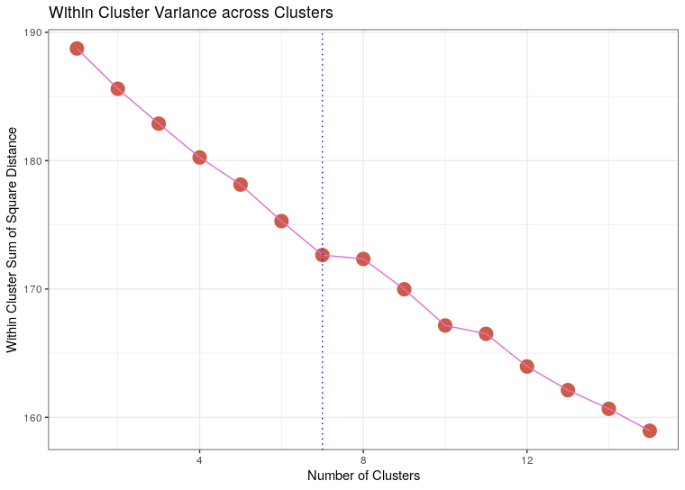
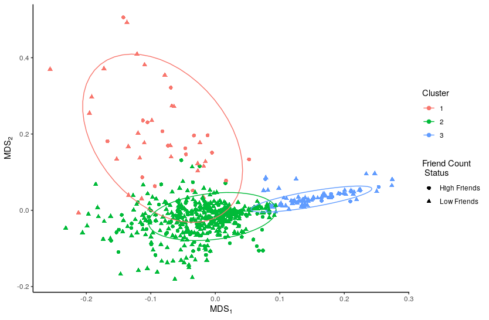
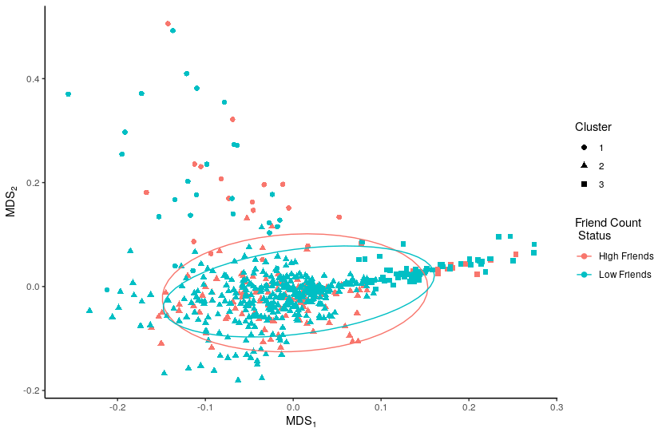

relevant posts can be retrieved from twitter by utilising the rtweet package, packages can be loaded for use in R thusly:
# Load Packages -----------------------------------------------------------
setwd("~/Dropbox/Notes/DataSci/Social_Web_Analytics/SWA-Project/scripts/")
if (require("pacman")) {
library(pacman)
} else{
install.packages("pacman")
library(pacman)
}
pacman::p_load(xts, sp, gstat, ggplot2, rmarkdown, reshape2,
ggmap, parallel, dplyr, plotly, tidyverse,
reticulate, UsingR, Rmpfr, swirl, corrplot,
gridExtra, mise, latex2exp, tree, rpart,
lattice, coin, primes, epitools, maps, clipr,
ggmap, twitteR, ROAuth, tm, rtweet, base64enc,
httpuv, SnowballC, RColorBrewer, wordcloud,
ggwordcloud, tidyverse, boot)The rtweet API will search for tweets that contain all the words of a query regardless of uppercase or lowercase usage cite:kearney2019.
In order to leverage the Twitter API it is necessary to use tokens provided through a Twitter developer account:
# Set up Tokens ===========================================================
options(RCurlOptions = list(
verbose = FALSE,
capath = system.file("CurlSSL", "cacert.pem", package = "RCurl"),
ssl.verifypeer = FALSE
))
setup_twitter_oauth(
consumer_key = "*************************",
consumer_secret = "**************************************************",
access_token = "**************************************************",
access_secret = "*********************************************"
)
# rtweet ==================================================================
tk <- rtweet::create_token(
app = "SWA",
consumer_key = "*************************",
consumer_secret = "**************************************************",
access_token = "**************************************************",
access_secret = "*********************************************",
set_renv = FALSEand hence all tweets containing a mention of Ubisoft can be returned and saved to disk as shown in listing save:
rdata file
In order to identify the number of users that are contained in the tweets the unique() function can be used to return a vector of names which can then be passed as an index to the vector of counts as shown in listing count, this provides that 81.7% of the tweets are by unique users.
The average number of friends and followers from users who posted tweets mentioning Ubisoft can be returned using the mean() as shown in listing mean this provides that on average each user has 586 friends and 63,620 followers.
Each user can be compared to the average number of followers, by using a logical operator on the vector (e.g. y > ybar), this will return an output of logical values. R will coerce logicals into 1/0 values meaning that the mean value will return the proportion of TRUE responses as shown in listing pyhat. This provides that:
A bootstrap assumes that the population is an infinitely large repetition of the sample and may be produces with respect to follower counts by resampling with replacement/repetition and plotted using the ggplot2 library as deomonstrated in listings btpop and btgg and shown in figure btpopfg.
This shows that the population follower counts is a non-normal skew-right distribution, which is expected because the number of friends is an integer value bound by zero cite:nist2013.
## Make the Population
bt_pop_data <- tibble("Followers" = bt_pop)
ggplot(data = bt_pop_data, aes(x = Followers)) +
geom_histogram(aes(y = ..density..), fill = "lightblue", bins = 35, col = "pink") +
geom_density(col = "violetred2") +
scale_x_continuous(limits = c(1, 800)) +
theme_bw() +
labs(x = "Number of Followers", y = "Density",
title = "Bootstrapped population of Follower Numbers")
In order to perform a bootrap for the population mean value of follower counts it is necessary to:
This is equivalent to drawing a sample from a population that is infinitely large and constructed of repetitions of the sample. This can be performed in R as shown in listing bt1s.
A 97% probability interval is such that a sample drawn from a population will contain the population mean in that interval 97% of the time, this means that it may be concluded with a high degree of certainty that the true population mean lies between 588 and 10228.
Alternative Approaches
If this data was normally distributed it may have been appropriate to consider bootstrapping the standard error and using a distribution, however it is more appropriate to use a percentile interval for skewed data such as this, in saying that however this method is not considered to be very accurate in the literature and is often too narrow. Section 4.1
It's worth noting that the normal value bootstrap offers no advantage over using a distribution (other than being illustrative of bootstrapping generally) Section 4.1
The boot package is a bootstrapping library common among authors in the data science sphere p. 295 p. 237 that implements confidence intervals consistent with work by Davison and Hinkley cite:ripley2020 in there texbook Bootstrap Methods and their Application. In this work it is provided that the method of constructing confidence intervals is superior to mere percentile methods in terms of accuracy Ch. 5, a sentiment echoed in the literature. Ch. 5
Such methods can be implemented in R by passing a function to the the boot call as shown in listing bootx. This provides a broader interval, providing that the true confidence interval could lie between 1079 and 16227 followers.
#+beginsrc r
xbarboot <- boot(data = x, statistic = meanval, R = 103) boot.ci(xbarboot, conf = 0.97, type = "bca", index = 1)
## BOOTSTRAP CONFIDENCE INTERVAL CALCULATIONS ## Based on 1000 bootstrap replicates ## ## CALL : ## boot.ci(boot.out = xbarboot, conf = 0.97, type = "bca", index = 1) ## ## Intervals : ## Level BCa ## 97% ( 1079, 16227 ) ## Calculations and Intervals on Original Scale ## Warning : BCa Intervals used Extreme Quantiles ## Some BCa intervals may be unstable ## Warning message: ## In norm.inter(t, adj.alpha) : extreme order statistics used as endpoints
#+endsrc
<<bibliography link>> bibliography:./references.bib
<<bibliographystyle link>> bibliographystyle:unsrt
A Confidence interval for the population mean friend counts may be constructed in a like wise fashion as shown in listings booty. This provides that the 97% confidence interval for the population mean friend count is between 384 and 502 (or 387 and 496 if the method used, they're quite close and so the more conservative percentile method will be accepted).
# d.) Estimate a Confidence Interval for the populattion mean Friend Count ===
# Using a Percentile Method #####################################################
ybar_boot_loop <- replicate(10^3, {
s <- sample(y, replace = TRUE)
mean(s)
})
quantile(ybar_boot_loop, c(0.015, 0.985)
# Using BCA Method #############################################################
mean_val <- function(data, index) {
X = data[index]
return(mean(X))
}
xbar_boot <- boot(data = y, statistic = mean_val, R = 10^3)
boot.ci(xbar_boot, conf = 0.97, type = "bca", index = 1)
## 1.5% 98.5%
## 383.7619 501.5903
##
## BOOTSTRAP CONFIDENCE INTERVAL CALCULATIONS
## Based on 1000 bootstrap replicates
##
## CALL :
## boot.ci(boot.out = xbar_boot, conf = 0.97, type = "bca", index = 1)
##
## Intervals :
## Level BCa
## 97% (386.8, 496.7 )
## Calculations and Intervals on Original Scale
## Some BCa intervals may be unstableIn order to bootstrap a confidence interval for the proportion of users with above average follower counts, repeteadly draw random samples from an infinitely large population composed entirely of the sample, and record the sampled proportion. this can be acheived by resampling the observations of above and below as shown in listing phat.
This provides that:
# 8.1.6 High Friend Count Proportion -------------------------------------------
prop <- factor(c("Below", "Above"))
## 1 is above average, 2 is below
py_hat_bt <- replicate(10^3, {
rs <- sample(c("Below", "Above"),
size = length(y),
prob = c(py_hat, 1-py_hat),
replace = TRUE)
isabove <- rs == "Above"
mean(isabove)
})
quantile(py_hat_bt, c(0.015, 0.985))
## 1.5% 98.5%
## 0.2399021 0.3072215
## > > > . + > > >
## BOOTSTRAP CONFIDENCE INTERVAL CALCULATIONS
## Based on 1000 bootstrap replicates
##
## CALL :
## boot.ci(boot.out = py_hat_boot, conf = 0.97, type = "bca")
##
## Intervals :
## Level BCa
## 97% ( 0.2399, 0.3072 )
## Calculations and Intervals on Original ScaleOne method to determine whether or not the number of followers is independent of the number of friends is to bin the counts and determine whether or not the distribution of users across those counts is consistent with the hypothesis of independence.
The counts may be binned by performing a logical interval test as shown in listing 7bin.
## Assign Categories
x_df <- data.frame(x)
x_df$cat[0 <= x_df$x & x_df$x < 100] <- "Tens"
x_df$cat[100 <= x_df$x & x_df$x < 1000] <- "Hundreds"
x_df$cat[1000 <= x_df$x & x_df$x < 2000] <- "1Thousands"
x_df$cat[2000 <= x_df$x & x_df$x < 3000] <- "2Thousands"
x_df$cat[3000 <= x_df$x & x_df$x < 4000] <- "3Thousands"
x_df$cat[4000 <= x_df$x & x_df$x < 5000] <- "4Thousands"
x_df$cat[5000 <= x_df$x & x_df$x < Inf] <- "5ThousandOrMore"
### Make a factor
x_df$cat <- factor(x_df$cat, levels = var_levels, ordered = TRUE)
### Determine Frequencies
(x_freq <- table(x_df$cat) %>% as.matrix())
## ** b) Find the Friend Count Frequency ===========================================
## Assign Categories
y_df <- data.frame(y)
y_df$cat[0 <= y_df$y & y_df$y < 100] <- "Tens"
y_df$cat[100 <= y_df$y & y_df$y < 1000] <- "Hundreds"
y_df$cat[1000 <= y_df$y & y_df$y < 2000] <- "1Thousands"
y_df$cat[2000 <= y_df$y & y_df$y < 3000] <- "2Thousands"
y_df$cat[3000 <= y_df$y & y_df$y < 4000] <- "3Thousands"
y_df$cat[4000 <= y_df$y & y_df$y < 5000] <- "4Thousands"
y_df$cat[5000 <= y_df$y & y_df$y < Inf] <- "5ThousandOrMore"
### Make a factor
y_df$cat <- factor(y_df$cat, levels = var_levels, ordered = TRUE)
### Determine Frequencies
(y_freq <- table(y_df$cat) %>% as.matrix())These values may be tabluated in order to count the occurence of users among these categories as shown in listing 7fr and table 7frt.
| Followers | Friends | |
| Tens | 421 | 262 |
| Hundreds | 317 | 476 |
| 1 - Thousands | 39 | 47 |
| 2 - Thousands | 11 | 15 |
| 3 - Thousands | 9 | 6 |
| 4 - Thousands | 2 | 9 |
| 5 Thousand or More | 18 | 2 |
The expected count of each cell, under the assumption that the two metrics are independent, will be the proportion users per bracket multiplied by the number of users in that status group. This implies that any cell will be:
This can be equivalently expressed as an outer product as shown in equation eqref:eq:1, in R this operation is denoted by the %o% operator, which is shorthand for the outer() function, this and other summary statistics may be evaluated as shown in listing smst.
The outer product is such that:
This means the matrix of expected frequencies can be expressed as an outer product thusly:
Testing Independence
In order to test whether or not the distribution of users among brackets is independent of being a follower or friend a test may be used, this can be evaluated from a model or simulated, in R, the simulated test is shown in listing chib, this provides a -value < 0.0005, which means that the hypothesis of independence may be rejected with a high degree of certainty.
From First Principles
The statistic may be performed from first principles by randomly sampling the values at the rate at which they occured, tabulating those counts, measuring the -value and then repeating this many times.
Because the samples are random they must be independent and average number of positives is hence an estimate for the FPR, which is in turn an estimate for the -value. This technique is demonstrated in listing chif, the p-value being returned as 0.0004, this value is consistent with the value produced by R's built in chisq.test function and so is accepted.
## ***** Create Vectors of factor levels
brackets <- unique(x_df$cat)
metrics <- c("follower", "friend")
## ***** Simulate the data Assuming H_0
## I.e. assuming that the null hypothesis is true in that
## the brackets assigned to followers are independent of the friends
## (this is a symmetric relation)
s <- replicate(10^4,{
## Sample the set of Metrics
m <- sample(metrics, size = n, replace = TRUE, prob = metric_prop)
## Sample the set of Brackets (i.e. which performance bracket the user falls in)
b <- sample(brackets, size = n, replace = TRUE, prob = bracket_prop)
## Make a table of results
o <- table(m, b)
o
## Find What the expected value would be
e_sim <- t(colSums(e) %o% rowSums(e) / n)
## Calculate the Chi Stat
chi_sim <- sum((e_sim-o)^2/e_sim)
chi_sim
## Is this more extreme, i.e. would we reject null hypothesis?
chi_sim > chi_obs
})
mean(s)
## [1] 4e-04The -value measures the probability of rejecting the null hypothesis when it is true, i.e. the probability of a detecting a false positive, a very small -value is hence good evidence that the null hypothesis should be rejected (because doing so would unlikely to be a mistake).
In saying that however the -value is distinct from the power statistic, which is a measure of //the probability of accepting the alternative hypothesis/ when it is true, a low -value is not a measurement of the probability of being correct.
Hence me way conclude, with a high degree of certainty, that the follower and friend counts are not independent of one another.
Users with Above average Friend Counts can be identified by filtering the tweets data frame for two conditions:
user-idfriend_count greater than averageThis can be acheived easily using the dplyr package as shown in hfdp, the top 20 of these users are shown in table hfls of the appendix
dplyr to Filter for Users with a high Friend Count
select <- dplyr::select
filter <- dplyr::filter
interested_vars <- c("user_id", "friends_count")
(friend_counts <- tweets.company %>%
select(interested_vars) %>%
filter(!duplicated(user_id)))
(high_friends <- friend_counts %>%
filter(friends_count > mean(friends_count, na.rm = TRUE)))
## Export Friends List
write.csv(high_friends[order(
high_friends$friends_count,
decreasing = TRUE),], file = "/tmp/highfriend.csv")Users with high friends may be determined by a similar method (or by taking the complement of the high friends) as shown in listing lfcd, the lowest 20 of these users are shown in table lftb of the appendix.
dplyr to Filter for Users with a low Friend Count
The tweets corresponding to users with high and low friend counts can be identified by filtering the dataframe based on the friend count and using that to the index the tweets from the data frame 1, alternatively it is possible to test whether or not the ID of a user appears in the high or low vector set using the %in% operator as shown in listing 8210.
## Method 1
friend_test <- tweets.company$friends_count > mean(tweets.company$friends_count)
tweets_high <- tweets.company$text[friend_test]
tweets_low <- tweets.company$text[!friend_test]
## Method 2 :15b5a74:
tweets_high <- tweets.company$text[tweets.company$user_id %in% high_friends$user_id]
tweets_low <- tweets.company$text[tweets.company$user_id %in% low_friends$user_id]
tweets <- c(tweets_high, tweets_low)
## Mark as High or Low
tweets_low <- cbind(tweets_low, rep("Low_Friend", length(tweets_low)))
tweets_high <- cbind(tweets_high, rep("High_Friend", length(tweets_high)))
tweets <- as.data.frame(rbind(tweets_high, tweets_low))
tweets$Friend_Status <- factor(tweets$Friend_Status)In order to clean the tweets it is necessary to create a corpus object as shown in listing cpmk, it is possible to pass a dataframe source in order to include the user ID, this isn't strictly necessary however because the tm package preserves order when performing transformations.
Next it is necessary to choose an enoding, a primary consideration of this is whether or not the use of emoji characters will influence the model performance. There is research to suggest that Emoji's can be used as predictive features cite:lecompte2017 and that they can improve sentiment analysis models cite:shiha2017 that implement a bag of words approach. For these reasons emoji characters will be preserved and UTF-8 implemented.
In order to encode the data as UTF-8, the iconv function can be used as shown in listing icv.
Before analysis the tweets should be modified to remove characters that may interfere with categorising words, this is referred to as cleaning, in particular the following should be implemented:
In particular it is important to reduce words to lower case before removing stop words otherwise an unorthodox use of capitalisation may prevent the word from being removed throughout.
The stop word ubisoft will also be used, this was the query term so it's expected to turn up at a very high frequency, the words can and 's also occured quite frequently and so were removed.
The cleaning can be implemented by mapping functions over the corpus, which is fundamentally a list, this can be performed via the tm_map function as shown in listing cltw.
tm_map function to clean the tweets
mystop <- c(stopwords(), "’s", "can", "ubisoft", "@ubisoft", "#ubisoft")# <<stphere>>
clean_corp <- function(corpus) {
## Remove URL's
corpus <- tm_map(corpus,content_transformer(function(x) gsub("(f|ht)tp(s?)://\\S+","",x)))
## Remove Usernames
corpus <- tm_map(corpus,content_transformer(function(x) gsub("@\\w+","",x)))
## Misc
corpus <- tm_map(corpus, FUN = removeNumbers)
corpus <- tm_map(corpus, FUN = removePunctuation)
corpus <- tm_map(corpus, FUN = stripWhitespace)
corpus <- tm_map(corpus, FUN = tolower)
corpus <- tm_map(corpus, FUN = removeWords, mystop)
## stopwords() returns characters and is fead as second argument
corpus <- tm_map(corpus, FUN = stemDocument)
return(corpus)
}
tweet_corpus_clean <- clean_corp(tweet_corpus)The tweets can be viewed from inside the corpus by selecting with the [ function 2 as demonstrated in listing ispt, the first tweet was rendered empty by the processing and the following two tweets were:
Pre-Processing
"Today was the first time in over a month that I have gone 24 hours without checking the coronavirus death toll. Thanks
@Ubisoft.""@btwimskrank
@TheDivisionGame@UbiMassive@Ubisoft@jgerighty@hamishbode@Tideman92@janeyo_jane@slimjdVery odd… I'll even post a video about it."
Post-Processing
"today first time month gone hour without check coronavirus death toll thank"
"odd ill even post video"
Create Term Documen Matrix
A term Document matrix (and it's transpose) can be constructed from a corpus using the tm:TermDocumentMatrix function as shown in listing tdm.
Apply TF-IDF Weighting
Weighted term frequency is defined as shown in equation eqref:tfidf, where:
This would requre multiplying each term of each row of the matrix by the corresponding vector element of , this can be implemented by taking the matrix product of a diagonalised matrix, this is shown in listing mytfidf.
N <- nrow(as.matrix(tweet_matrix_dtm)) # Number of Documents
ft=colSums(as.matrix(tweet_matrix_dtm) > 0) #in how many documents term t appeared in,
TF <- log(as.matrix(tweet_matrix_dtm) + 1) # built in uses log2()
IDF <- log(N/ft)
tweet_weighted <- TF %*% diag(IDF)
colnames(tweet_weighted) <- colnames(tweet_matrix_dtm)There is however a function built in to the tm package that will weight term document matrices and this will instead be implented to analyse the data because it will produce more maintainable code.
In order to create a term document matrix (and its transpose) with TF-IDF weighted values, the weighting argument may be specified as weightTfIdf by passing an appropriate list to the control argument of the TermDocumentMatrix, as shown in listing btdm
Empty Documents may be removed from the matrix by a logical test as shown in listing emp 3 this provides that 328 documents were empty following the processing. A summary of the first rows and columns of this matrix, following the removal of empty documents, is provided in table tfidf of the appendix.
In order to consider clustering, it can be more effective to consider the distance between the weigted documents in terms of cosine distance, the cosine distance can be calculated from the euclidean distance using the identity shown in eqref:cos, and this can be performed in R by taking the matrix product of a diagonalised matrix as shown in listing dist.
The cosine distance however is not appropriate to perform clustering on and so instead should be projected back into euclidean space, this can be acheived using Multi-Dimensional Scaling via the cmdscale functionas shown in listing mds. The distance is a measure of between document distance so the number of dimensions should correspond to the number of documents, however, if there are zero-value eigenvalues, these dimensions won't help explain the data in the projection, hence the number of eigenvalues has been used as the dimension of projection in this case.
In order to determine the appropriate number of clusters, the within cluster variance can be measurd, the number of clusters at which this value ceases to decrease is indicative of a potentially appropriate number of clusters. This is implemented in listing ssw and shown in figure sswp.
set.seed(271)
n = 15 # Assume it bends at 7 clusters
SSW = rep(0, n)
for (a in 1:n) {
K = kmeans(mds.tweet_weighted_dtm, a, nstart = 20)
SSW[a] = K$tot.withinss
paste(a*100/n, "%") %>% print()
}
SSW
SSW_tb <- tibble::enframe(SSW)
ggplot(SSW_tb, aes(x = name, y = value)) +
geom_point(col = "#Cd5b45", size = 5) +
geom_line(col = "#Da70d6") +
geom_vline(xintercept = 7, lty = 3, col = "blue") +
theme_bw() +
labs(x = "Number of Clusters",
y = "Within Cluster Sum of Square Distance",
title = "Within Cluster Variance across Clusters")Figure sswp Indicates a sudden stop of decrease in variance at 7 clusters and following that the within cluster variance begins to decrease at a slightly slower rate. For this reason 7 could be an appropriate candidate for the number of clusters, however the minimal amount of change in the within-cluster variance indicates that the data is most likely not clustered at all.

Moving forward we'll use 3 clusters, 7 is too large and a smaller number will likely be more effective at categorising the data (particularly given that the stratification of the data appears to be quite limited from figure sswp). The number of tweets in a cluster may be measured by using the table function as shown in listing tab and table tabo.
table function can count the number of tweets per cluster.
| Cluster | 1 | 2 | 3 |
|---|---|---|---|
# of tweets |
77 | 58 | 537 |
The clusters can be projected into 2D Euclidean-Space using Multi-Dimensional Scaling, these dimensions would represent the first two principle components of the cosine distance of the weigted tweets. This is demonstrated in listings cmds. A plot of the friend countstaus mapped to shape and clusters mapped to colour is demonstrated in listing pt1c shown in pt2, In order to get a better understanding of the distribution of friend counts a plot of the friend count status mapped to colour is demonstrated in listing pt2c and shown in figure pt2.
MDS_Euclid_2D <- cmdscale(D, k=2) #TODO What should K be? see issue #10
mds_data$Cluster <- factor(mds_data$Cluster)
if (nrow(MDS_Euclid_2D[,1:2]) == length(K$cluster)
&& length(K$cluster) == nrow(tweets[-null,])) {
mds_data <- cbind(MDS_Euclid_2D[,1:2], "Cluster" = K$cluster, tweets[-null,])
}
mds_data$Cluster <- factor(mds_data$Cluster)
names(mds_data)[1:2] <- c("MDS1", "MDS2")ggplot(pca_data, aes(x = MDS1, y = MDS2, col = Friend_Status)) +
geom_point(aes(shape = Cluster), size = 2) +
stat_ellipse(level = 0.95) +
theme_classic() +
labs(main = "Principal Components of Twitter Data",
x = TeX("MDS_1"), y = TeX("MDS_2")) +
scale_color_discrete(label = c("High Friends", "Low Friends")) +
guides(col = guide_legend("Friend Count \n Status"))ggplot(pca_data, aes(x = MDS1, y = MDS2, col = Cluster)) +
geom_point(aes(shape = Friend_Status), size = 2) +
stat_ellipse(level = 0.9) +
theme_classic() +
labs(main = "Principal Components of Twitter Data",
x = TeX("MDS_1"), y = TeX("MDS_2")) +
scale_shape_discrete(label = c("High Friends", "Low Friends")) +
guides(shape = guide_legend("Friend Count \n Status"))

Figure pt1 indicates that altough there isn't a clear distinction between clusters there is seperation of the tweets in such a way that does allow some degree of classification to occur. Figure pt1 and pt2 both indicate that having many or few friends is reasonably independent of the cluster that the tweet belongs to.
The Number of above or below friends corresponsing to a given cluster can be tabulated by using the table function as shown in listing tfc and table tfct, this indicates that there is a difference in the proportion of users with above average friend counts between clusters with cluster #1 having the highest proportion of users with above average friend counts.
| Cluster | Above Average | Below Average | Proportion |
1 |
17 | 27 | 0.39 |
2 |
141 | 407 | 0.26 |
3 |
16 | 64 | 0.20 |
Tweets can be sampled from the clusters by using the sample function with a logical test, this can be combined with a for loop as shown in listing 8218, this provides the following output.
- Cluster 1
- @BelovedOfBayek @BayekOfSiwa @assassinscreed @Ubisoft @UbisoftMTL @Captured_Collec @GamerGram_GG @_GameScreenshot And those smiles - and love - are contagious. Believe me, it makes me very happy! What you have is special! 💗 ~ Steffi
- @Ubisoft why is it wen I headshot sumone why don’t it register a headshot is a 1 shot kill fix your game sir
- @BikiniBodhi I think we need another movement going. Obviously Ubisoft already has plans for the next few releases of ops but we really need an Op whose ability is to reinforce more walls than others. Especially another castle on the team but for walls. Like 4 walls instead of 2.
- The United Arab Emirates logged into my Ubisoft account. For why?
- @Atalagummy Está gratis este finde en lo de ubisoft creo
- Cluster 2
- Here's everything you need to know about Ubisoft's Watch Dogs Legion in Hindi - Release date, Story - Everything we know about it till now. https://t.co/B4lMshJdqw via @YouTube
- @Rainbow6Game @TheGodlyNoob I have never seen a game company ruin their reputation so fast and so careless as Ubisoft
- tiltei com a ubisoft, dei block na minha conta sem querer, to mt puto, real
- My first game that really hyped me was a game called rolling thunder back in the 80’s https://t.co/mPWim2hwVY
- @videogamemorals @PartisanClown more remakes of Lunar: The Silver Star, Lunar Legend and Lunar: Silver Star Harmony, were released in 2002 by Media Rings and Ubisoft and in 2009 by GungHo Online Entertainment and Xseed Games, respectively.\
- Cluster 3
- @Ubisoft @UbisoftSupport crossplay between xbox and pc for Division 2 please?
- @tornado_raphi @Ubisoft @UbisoftDE Haha wollte auch einmal schlau sein :(
@UbisoftI was in the middle in a game waiting for us to spawn in and it took forever and it somehow kicked me from the game for inactivity. Anyway to fix this https://t.co/Uz1yZ73R4M- @Operatedleech87 Yo lo veia al revez algo de Ubisoft en Girls Frontline, pero igual un juego en consola jalaria.
- @VGPNetwork @GamerGram_GG @Ubisoft Haha.. I love that film!
| User ID | Friend Count |
|---|---|
| 274488119 | 8752 |
| 743771665 | 5002 |
| 1036014247 | 4999 |
| 2281452613 | 4992 |
| 1554453560 | 4958 |
| 981233818408570880 | 4944 |
| 931765564388921344 | 4836 |
| 807405140 | 4710 |
| 1112579152970842112 | 4514 |
| 2441577446 | 4322 |
| 552692862 | 4229 |
| 956297007127252992 | 3976 |
| 22493896 | 3675 |
| 255922782 | 3500 |
| 1067409881332936709 | 3312 |
| 27998570 | 3210 |
| 715118521555017728 | 3099 |
| 2356170174 | 2885 |
| 2372688230 | 2880 |
| 1868357425 | 2719 |
| User ID | Friend Count |
|---|---|
| 1254280995592966145 | 0 |
| 875126772978913280 | 0 |
| 1254256124217319425 | 0 |
| 1250219450210480128 | 0 |
| 1214921087328411648 | 0 |
| 1254115699628421120 | 0 |
| 1217600080376520704 | 0 |
| 1253480062453600257 | 0 |
| 1254178435502571521 | 0 |
| 1251955545092718592 | 0 |
| 1106864828700712960 | 0 |
| 1160744587620524032 | 0 |
| 1254256536710504448 | 1 |
| 1129040408384868352 | 1 |
| 1254121201871589376 | 1 |
| 1248687797755658243 | 2 |
| 1210265263867932675 | 2 |
| 3380784928 | 3 |
| 1177274165239275520 | 3 |
| 54645521 | 3 |
| check | coronavirus | death | first | gone | hour |
|---|---|---|---|---|---|
| 0.615 | 0.747 | 0.830 | 0.596 | 0.747 | 0.698 |
| 0 | 0 | 0 | 0 | 0 | 0 |
| 0 | 0 | 0 | 0 | 0 | 0 |
| 0 | 0 | 0 | 0 | 0 | 0 |
| 0 | 0 | 0 | 0 | 0 | 0 |
| 0 | 0 | 0 | 0 | 0 | 0 |

This works because the tm package preserves the order of the data, this can be confirmed by using a dataframe source as opposed to a vector source (e.g. in listing cpmk) and comparing the ID's before/after transformation.↩︎
The [ function is actually shorthand for Extract(), most things in R are functions, this is similar to LISP and has to do with the origins of the language, e.g. sum(1:10) == (sum (1:10)), also relevant see the relevant xkcd in figure xkcd.↩︎
It is important not to filter based the logic of an empty vector, because otherwise an empty vector will returned, hence the if statement in listing emp.↩︎